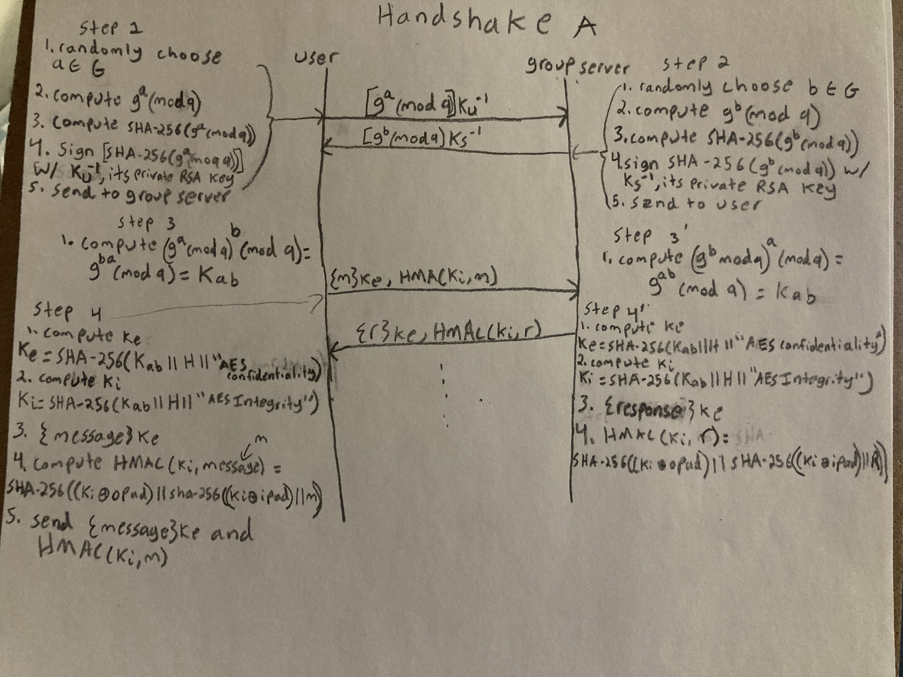
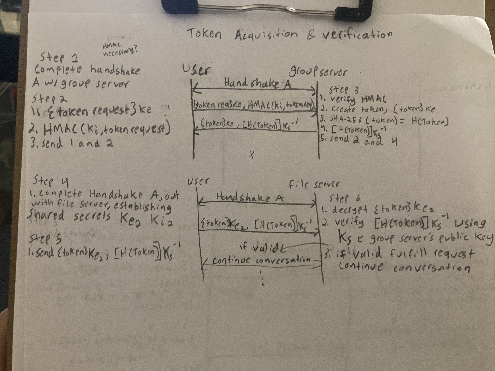

The system we are designing is for a company context with employee users and company admins managing the system. Overall our design is inspired by SSH. We are using a combination of RSA-2048 asymmetric protocol and Diffie-Hellman to providemutual authentication and to come up with a shared secret which is then used to produce shared symmetric keys used as session keys with AES with 256 bit keys in CBC mode. Public keys are verified out-of-band which is reasonable given a company scenario where out-of-band communication is possible and expected.
Threat 1 is the threat of the group server granting an illegitimate user a token they are not authorized to have. If this threat was left unguarded, a user Alice could request a different user’s, Bob’s, token and use it to get access to files she is not allowed to, undermining any sort of security function groups and tokens have. If Bob is an owner of a group she could add other unauthorized users to a group or even delete it entirely along with all of its files.
To make sure that tokens are only given to users that the token belong to, we will adopt an asymmetric authentication protocol. To begin, all users will be created by an admin using the “cuser” command which will create a username and also an RSA-2048 bit keypair consisting of a private, Ku^-1 and public key KU. The private key will be stored out-of-bound by the user. We chose RSA due to the level of assurance that has been established over the years with its widespread use and a key size of 2048 because a 2048 bit key is the current NIST recommendation.
Upon the user’s first connection to the group server, the user will send their public key to the server which will store the public key in a list of keys it keeps of users. A user who is able to prove they have the private key associated with that public key will be given access to the token associated with the account. Also, the first time the user connects to the group server, the latter will display its public key to the user, and similar to SSH, the user will be responsible for verifying out-of-band with an Admin that the key is legitimate. The client app will maintain a list of public keys of servers it has connected to in the past.
Mutual authentication and the establishment of a session will take place using Diffie-Helman. To initiate a connection to the server, a user will first choose a random ‘a’ from a public finite cyclic group G of large prime order q, along with a public g generator. They will compute g^a (mod q) and also sign a SHA-256 hash of it with their private RSA key KU^-1. The hash is required because g^a (mod q) would be too long (because we will pick large primes to make it hard to brute-force) to sign with RSA otherwise. SHA-2 is chosen because it is considered secure currently unlike the Mx series or SHA-1. They will then send g^a (mod q) and the signed hash along with their RSA public key (as a marker for who they are) to the server. Upon receiving this, the group server will choose an ‘b’ in the same group, compute g^b (mod q), sign a hash of it with its private RSA key KS^-1, and send both to the user. Both the user and the server will then compute a shared secret K = g^(ab) (mod q) which will be used to derive symmetric session keys.
Going back to threat 1, Alice, given that she does not have access to Bob’s private key in this scenario will not be able to sign g^a (mod q) and so won’t be able to derive the shared secret to be able to get the token.
Threat 2 is the threat of a user modifying their token to grant them access to more groups/files than they should or forging someone else’s token to impersonate them. Under the current model, Alice could properly authenticate with the group server and get a token giving her access to the groups and files she is a member of, let's say groups A and B and files 1 and 2, but then modify the token to also grant her access to group C and file 3. This is a problem because file 3 could contain sensitive information not meant for Alice. She could even add herself to the admin group and delete users, add new illegitimate users to existing groups, and in general wreck the entire system. Alice could also forge a token to look like another user to get access to the specific groups and files the user does. Also an attacker completely unknown to the system could theoretically create a token from scratch resembling the one produced by the Group server to get unauthorized access. This is possible under the current model because there is no mechanism for file servers to be able to determine whether or not a token has been modified since the group server issued it.
The solution is using digital signatures to detect modified/forged tokens and prevent access when detected. The user and group server will first mutually authenticate and establish a shared secret as described above before a user requests a token. Once completed and upon a token request, the group server will create the token as before, but also hash the token using SHA-256 (to reduce the size) and sign the hash using its private RSA key KS^-1. It will then send both the token and the signature to the user.
To use the token, the user will first mutually authenticate with the file server and establish a shared secret, the process of which is described in threat 3. Once completed, the user will hand both the token and the signature to the file server which will then verify the signature using the group server’s public key KS, compute the hash of the token using the same algorithm as the group server, and compare the two hashes to check for a match. The file server will have access to the group server’s public key because the user who creates the file server will register it with the file server.
Now if Alice modifies a token, she will not be able to sign it because she does not have access the the group server’s public key. If she signs it with her own key, the file server will not be able to decrypt it with the group server’s public key and will refuse the token. An attacker could not forge a token or construct one completely from scratch either because of the same reason.
Threat 3 is the threat of a user attempting to connect to a file server s, but connecting instead to a malicious server impersonating s. Under our current model, an attacker could set up a decoy server that impersonates a file server to which a user could unwittingly upload sensitive files, essentially handing them to the attacker. They could also download a file thinking it is legitimate but instead be given malware. This is because users currently connect to the file server and do not authenticate it in any way, instead just blindly handing it a token and downloading/uploading files.
We will secure this threat using an approach similar to SSH and the protocol described in T1 for the group server. Algorithm and key size choices are made using the same reasoning described in T1. The first time a user connects to a file server, it will display its public key which the user will be responsible for verifying is secure out-of-band. This is a reasonable assumption because the system’s use-case is in a company setting where users will have methods of contacting the file server creator and/or an admin. The client app will maintain a list of public keys of file servers it has connected to in the past, so on subsequent connections to the file server, the user will know the server’s public key.
To initiate a connection to the server, a user will first choose a random ‘a’ from a public finite cyclic group G of large prime order q, along with a public g generator. They will compute g^a (mod q) and also sign a SHA-256 hash of it with their private RSA key KU^-1. The hash is required because g^a (mod q) would be too long (because we will pick large primes to make it hard to brute-force) to sign with RSA otherwise. They will then send g^a (mod q) and the signed hash along with their RSA public key (as a marker for who they are) to the server. Upon receiving this, the file server will choose a ‘b’ in the same group, compute g^b (mod q), sign a hash of it with its private RSA key KS^-1, and send both to the user. Both the user and the server will then compute a shared secret K = g^(ab) (mod q) which will be used to derive symmetric session keys.
Asymmetric ciphers are slow and are limited in the amount of data they can encrypt which will be a problem since files are expected to be much larger than the RSA key size. Therefore the rest of the session will be conducted using AES-256 symmetric key protocol with CBC mode and PKCS7Padding. The encryption key for the AES-256 protocol will be Ke = SHA-256(Kab || H || “AES Confidentiality”) where H is a SHA-256 hash of the messages up to this point. The integrity key will be Ki = SHA-256(Kab || H || “AES Integrity”) where H is a SHA-256 hash of the messages up to this point. Every message sent between the client and servers will be encrypted by the sender using AES-256 in CBC mode with PKCS7Padding with Ke. The sender will also create an HMAC using the message m and Ki where HMAC(Ki, m) = SHA-256( (Ki ⊕ opad) || SHA-256( (Ki ⊕ ipad) || m)). Because SHA-256 is vulnerable to extension attacks, this HMAC scheme is used to prevent an attacker from modifying the message and extending the hash.
Diagram Essentially T1 Handshake A diagram but with File Server Instead
File server creation note: Since any random user can create file servers, the server’s name, port information, and whether it is trustworthy is expected to be shared/determined out-of-band. This is reasonable because the use-case for the system is assumed to be a company setting where contact out-of-band is possible.
Going back to the example, a user connecting to s can now be assured they are not actually connecting to an impersonator because an impersonator would not be able to sign g^a (mod q) because they will not have s’s private key.
Threat 4 is the threat that third party entities can listen in on communications between the client and group/file servers(s). Under our phase 2 model, anyone snooping on messages between the client app and servers can steal and use information because it is all sent in plain text. There is really no benefit to having tokens currently because Alice can just listen to communications between Bob and the servers to steal his token to impersonate him, modify messages such as tokens or files, or read every file being downloaded or uploaded.
Many of the specific issues posed by threat 4 have already been handled by our solutions to thread 1-3. Before getting any token or doing any meaningful work on a server (group or file), a user uses the RSA digital signatures along with Diffie-Hellman to mutually authenticate and to establish a shared secret Kab which is used to derive AES-256 symmetric keys to provide confidentiality and integrity for all communications.
How the symmetric keys provide confidentiality and integrity is as follows:
The encryption key for the AES-256 protocol will be Ke = SHA-256(Kab || H || “AES Confidentiality”) where H is a SHA-256 hash of the messages up to this point. The integrity key will be Ki = SHA-256(Kab || H || “AES Integrity”) where H is a SHA-256 hash of the messages up to this point. Every message sent between the client and servers will be encrypted by the sender using AES-256 in CBC mode with PKCS7Padding with Ke. The sender will also create an HMAC using the message m and Ki where HMAC(Ki, m) = SHA-256( (Ki ⊕ opad) || SHA-256( (Ki ⊕ ipad) || m)). Because SHA-256 is vulnerable to extension attacks, this HMAC scheme is used to prevent an attacker from modifying the message and extending the hash.
Under the trust model for phase 3, group and file servers are assumed to be secure, and the only snooping threat is in transit.
Conclude with a paragraph or two discussing the interplay between your proposed mechanisms, and commenting on the design process that your group followed. Did you discuss other ideas that didn’t pan out before settling on the above-documented approach? Did you end up designing a really interesting protocol suite that addresses multiple threats at once? Use this space to show off your hard work!
If your group did any extra credit, please discuss that in this section, as well.
Remove these instructions and examples from your final submission.